Нащадки войовничих амазонок населяли колись степи біля Дніпра. Не вірите? Тоді ви ще не читали книгу «501 факт, який треба знати з... історії України» Анни та Андрія Шиманських. Тут ви знайдете інформацію про цікаві, визначні й несподівані моменти нашої історії. Деякі з них, ми певні, ви знаєте, а інші вас можуть неабияк здивувати. Давайте переглянемо кілька цікавих фактів з книги, які вам навряд чи розповідали на уроках історії у школі.
-
Де на території сучасної України знаходилося «Місто людей кіммерійських», згадане в «Одіссеї» Гомера?
Городище, відоме під назвою «Дикий сад», існувало на території сучасного Миколаєва приблизно у 1250–925 рр. до н. е. Це було укріплене місто та порт, де працювали гончарні, металургійні майстерні, розбудовували житлові й культові споруди.
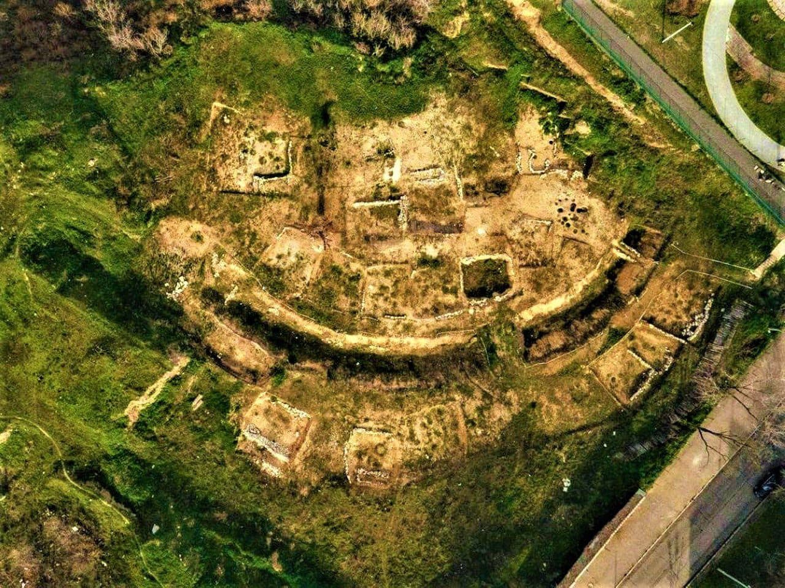 -
Найстаріше неперервно заселене місто на території України це…
Білгород-Дністровський — це містечко на Одещині функціонує та є постійно заселеним вже щонайменше 2500 років. У античні часи воно називалося Тіра і було давньогрецькою колонією.
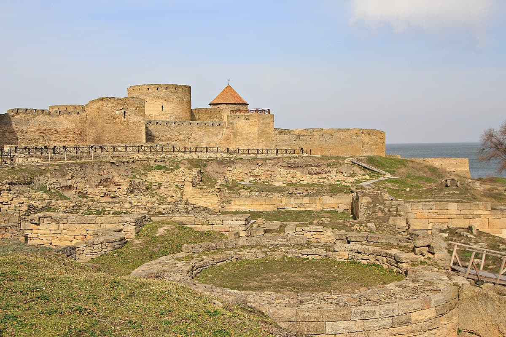 -
Які племена, що населяли степову зону Лівобережжя Дніпра у V–IV ст. до н. е., були нащадками амазонок?
Жінки-сарматки на рівні з чоловіками брали участь у походах та війнах, чудово володіли зброєю й були вправними вершницями. Геродот писав, що сармати є нащадками легендарних войовничих амазонок та скіфських юнаків.
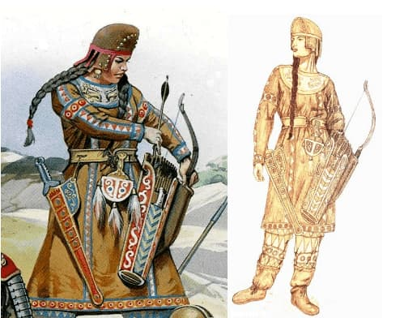 -
Першим князем Русі, що мав слов’янське ім’я, був…
Святослав Хоробрий — перший князь Русі, який мав слов’янське ім’я. Імена його попередників — Ольга, Ігор, Олег, Аскольд — були скандинавського походження.
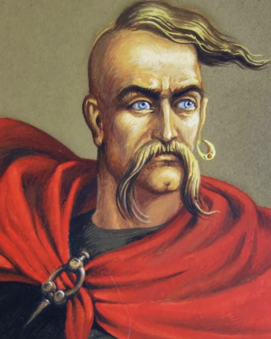 -
Тризуб був особистим знаком київського князя…
Зображення тризуба було особистим знаком князя Володимира Великого. Тризуб зображували на печатках князя та монетах.
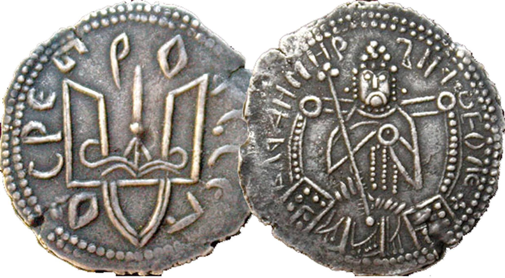 -
Коли на території України відкрили перший навчальний заклад для дівчат?
Першу школу для дівчат у Києві відкрили в 1086 р. Її заснувала донька київського князя Всеволода — Анна. Учениці вивчали письмо, читання, рукоділля.
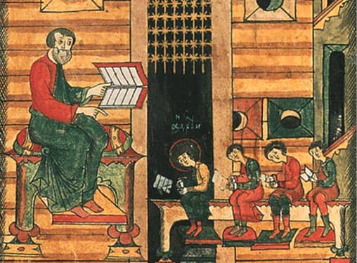 -
Коли з’являються перші письмові згадки про українських козаків?
У 1492 р. в кримських документах з’являється згадка про козаків-християн з Київщини та Черкащини, які у гирлі Дніпра напали на турецький корабель. Прикордонні території (Київщина, Поділля, Брацлавщина), що межували з Османською імперією, вимагали додаткового захисту. Місцеві адміністратори звертались по допомогу до загонів козаків — відбити напад чи звільнити полонених. Вже у 1508 р. існує згадка про перемогу над татарами київського урядовця Семена Полозовича за участі козацтва.
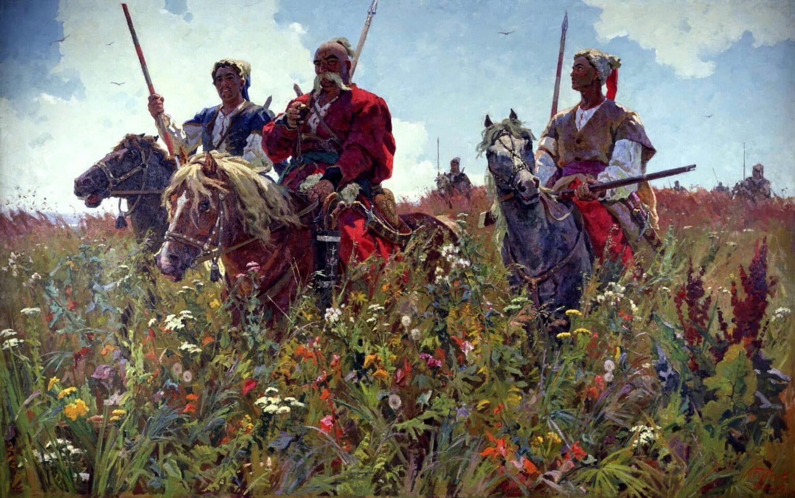 -
Хто збудував першу Запорізьку Січ?
У 1551 р. польський король Сигізмунд ІІ надав князю Дмитру Вишневецькому посаду канівського та черкаського старости, довіривши йому охорону південного кордону держави. Дмитро Вишневецький об’єднав розрізнені козацькі загони та збудував укріплення за Дніпровими порогами на острові Мала Хортиця, яке і вважається першою Запорізькою Січчю.
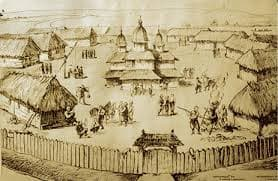 -
Кого називали «некоронованим королем Русі» у XVI ст, покровителем української культури та науки?
Василь-Костянтин Острозький належав до наймогутнішого роду Волині та одного з найвпливовіших у Речі Посполитій. За життя Василя-Костянтина Острозького (1526–1608) родинне гніздо — м. Острог — стало одним із головних центрів розвитку української культури. Тут зібрано велику бібліотеку. Організовано роботу друкарні Івана Федоровича, де побачила світ «Острозька Біблія». Сюди прибували освічені люди, священнослужителі й науковці. У 1576 р. тут було засновано Острозьку академію — першу науково-освітню установу на українських землях. На жаль, у середині XVII ст. чоловіча лінія князів Острозьких обірвалась. За дивним збігом обставин, аналогічно припинили своє існування могутні князівські династії Збаразьких, Корецьких, Порицьких.
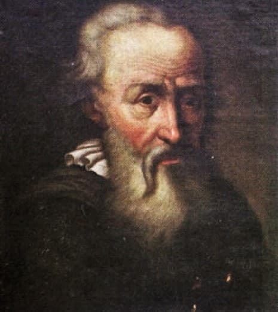 -
Хто склав першу карту українських земель?
Протягом 1630-1640 рр. на службі у польського короля Сигізмунда ІІІ перебував французький інженер та картограф Гійом Левасер де Боплан. За його проєктами було розбудовано низку фортець та замків: у Кременчуці, Бродах, Барі, Підгірцях, Кодаку. Шукаючи вдалі місця для побудови укріплень, Боплан їздив країною, вивчав територію і традиції населення. У 1639 р він склав першу рукописну карту українських земель. У 1648 р. картограф Віллем Гондіус зробив за нею гравюру розміром 42 × 54,5 см під назвою «Загальний план Диких полів, простіше кажучи, Україна. З суміжними провінціями». На карту було нанесено Волинь, Київщину, Поділля, Чернігово-Сіверщину, Покуття. Вона містила назви 1293 об’єктів, зокрема — 993 населених пунктів та 153 річок. Як коментарі до карти у 1660 р. вийшла праця «Опис України».
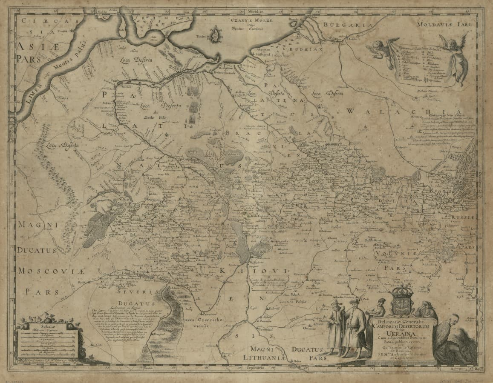 -
Що допомагало козацьким чайкам непомітно наближатися до ворога?
Козацькі чайки мали однаковий ніс та корму, що дозволяло їм рухатись в обидві сторони та миттєво змінювати напрямок руху. Також чайки були обладнані зйомними щоглами — їх можна відкріпити (та зробити човен менш помітним) при наближенні до ворога. Довжина чайки була 18-22 метри, вміщала 50-70 чоловік. Могли бути озброєні гарматами малого калібру.
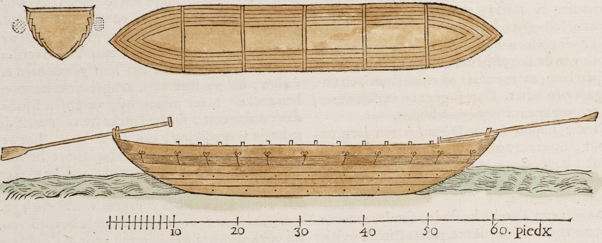 -
Як спершу називали чумаків?
Соленики — так спочатку називали чумаків, адже основою цього промислу, який існував на теренах України понад 350 років, було транспортування солі з Півдня, теренів Прикарпаття та Донеччини до центральних регіонів країни. Партачами називали нецехових ремісників. Товмачами — перекладачів у Війську Запорозькому. Харцизниками кликали розбійників.
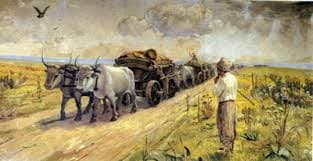 -
Яка книга першою була написана розмовною українською мовою?
У 1798 р. видано перші частини поеми «Енеїда» Івана Котляревського. Це перший літературний твір, написаний розмовною українською мовою — середньонаддніпрянським діалектом. Автор використав на письмі мову, яку чув щодня на вулицях Полтави і якою, ймовірно, сам спілкувався. Видання 1798 р. опублікували без згоди автора за кошти поміщика Максима Пурпури. Котляревський страшенно образився на нього і навіть зробив героєм наступних частин поеми: «Якусь особу мацапуру // Там шкварили на шашлику». Усі шість частин «Енеїди» вперше побачили світ у 1842 р.
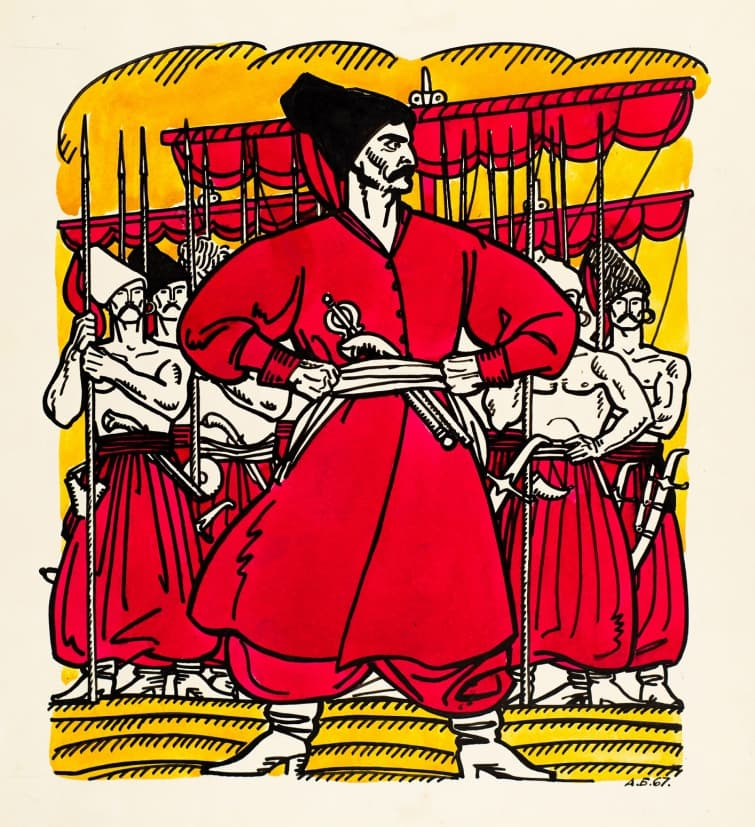 -
Чим займалося «Товариство мочимордія», популярне серед українського дворянства в першій половині 19 ст?
«Товариство мочимордія» отримало назву від жартівливого вислову «мочити морду», тобто вживати алкоголь. Це було неофіційне утворення українського дворянства та літературно-мистецької богеми 1840-х років на Лівобережній Україні. У 1843 році на одне із засідань мочиморд — на бал поміщиці пирятинського повіту Тетяни Волховської — потрапив Тарас Шевченко із своїм другом Євгеном Гребінкою. «Тарас Шевченко ще в будинку Волховської був посвячений у мочимордії. Він там у перший же день пройшов весь курс цієї премудрої науки», — пише Ґео Шкурупій. В результаті Шевченка йменували «Гетьманом» товариства.
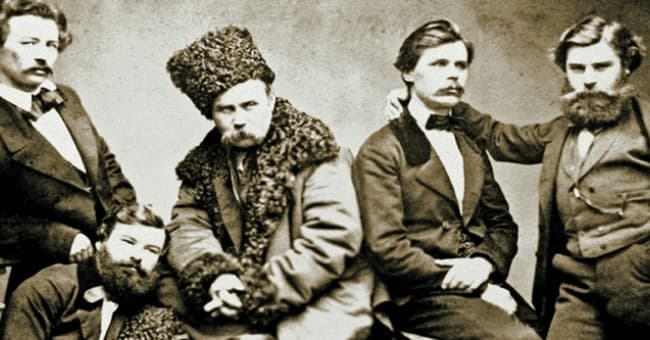 -
Коли було вперше виконано гімн України?
Під час однієї з вечірок в етнолога та поета Павла Чубинського його сербські друзі, що навчались у Київському університеті, заспівали свою патріотичну пісню. Вона так надихнула Чубинського, що він того ж вечора написав вірш «Ще не вмерла Україна». Через рік, у 1863 р., композитор отець Михайло Вербицький написав до нього музику. А вже 10 березня 1865 р. на дні пам’яті Тараса Шевченка у м. Перемишль відбулося перше виконання гімну.
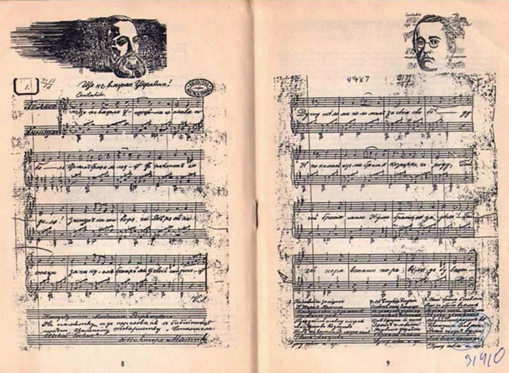